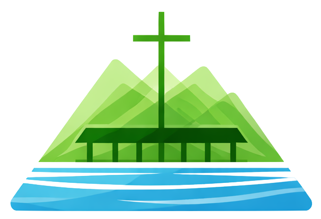

Um percurso formativo — da escolha de uma tradução até o coração do Evangelho da Graça.
Uma jornada acessível para quem deseja ler, entender e viver as Escrituras Sagradas.
Este curso conduz o participante em uma jornada que começa no texto — aprendendo a escolher uma boa tradução, entender a estrutura das Escrituras e desenvolver uma leitura consistente — e avança progressivamente pelos fundamentos da fé cristã, pela compreensão honesta da condição humana e pela natureza do pecado, até chegar ao coração de tudo: a graça imerecida de Deus revelada em Jesus Cristo.
Escolher, ler e interpretar as Escrituras
Fundamentos e bases do Cristianismo histórico
Natureza humana, pecado e necessidade de redenção
O Evangelho como resposta definitiva à condição humana
Cada encontro tem duração de 1h40, com ensino expositivo, leitura de texto e discussão em grupo.
Uma visão panorâmica das Escrituras e um convite fundamentado à leitura regular — não como obrigação religiosa, mas como encontro com Deus.
Ferramentas concretas para começar bem: entender as diferenças entre traduções e criar o hábito de uma leitura regular e significativa.
O que a Igreja sempre confessou ao longo da história — dos credos à encarnação. Os pilares inegociáveis da fé cristã e por que eles importam.
A visão bíblica sobre a natureza humana — a grandeza de ser feito à imagem de Deus e a tensão real entre dignidade e fragilidade.
Uma abordagem honesta e bíblica sobre o pecado — não como tema tabu, mas como realidade que explica nossa condição e aponta para a necessidade do Evangelho.
O coração do curso: a boa notícia de que Deus não deixa a história terminar no pecado. A graça como resposta definitiva e imerecida à condição humana.
Saber escolher uma tradução e desenvolver uma leitura regular e significativa das Escrituras.
Articular com clareza as bases históricas e teológicas da fé cristã.
Compreender a condição humana à luz das Escrituras, incluindo a natureza e os efeitos do pecado.
Entender e experimentar a graça de Deus como resposta definitiva à condição humana.
Desenvolver o hábito de estudar a Bíblia junto, valorizando o corpo de Cristo na IBAVA.
Conectar a Palavra de Deus às situações cotidianas de forma prática e transformadora.
Cada encontro combina ensino, leitura e conversa — sem exigir conhecimento prévio de teologia.
Exposição clara e acessível dos temas bíblicos e teológicos de cada encontro.
Perguntas reflexivas que incentivam participação e o compartilhar de experiências.
Passagens selecionadas lidas e comentadas juntos durante o encontro.
Pequenas leituras e reflexões sugeridas para os dias entre os encontros.
Cada encontro abre e fecha em oração, integrando estudo e espiritualidade.
Certificado de conclusão emitido pela Igreja ao participante que completar o curso.